Sep 2021 – Jun 2024
SMU
Southern Medical University
Professional Master’s Degree in Clinical Medicine (Ophthalmology)
Guangzhou, China
Clinical Medicine (Ophthalmology) · Retinal Imaging & AI
Guangzhou Xinhua University
beixiao0507@gmail.comI completed a professional master’s degree in clinical medicine (ophthalmology) at Southern Medical University in 2024 and currently teach optometry at Guangzhou Xinhua University. During my master’s training, I investigated retinal and choroidal vascular features in pachychoroid spectrum diseases using ultra-widefield OCT/OCTA, contributing to first-author publications in ophthalmic imaging.
I am now building on this clinical imaging background through practical computational projects, including FundusAgeAI, a PyTorch-based model for estimating chronological age from fundus photographs. I am particularly interested in how quantitative retinal imaging and carefully evaluated computational methods can address clinically relevant questions. I am seeking PhD training in ophthalmic imaging and AI. Explore the live demo ↗
Sep 2021 – Jun 2024
Professional Master’s Degree in Clinical Medicine (Ophthalmology)
Guangzhou, China
Sep 2016 – Jun 2021
Bachelor of Medicine in Clinical Medicine
Xianning, China
Sep 2021 – Jun 2024
RETINAL IMAGING RESEARCH
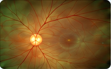
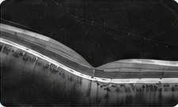
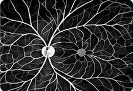
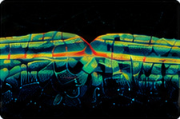
2025 – Present
INDEPENDENT RESEARCH PROJECTS
Hands-on projects extending my clinical imaging background into reproducible computational workflows.
Chronological-age prediction from fundus photographs
Developed an ImageNet-pretrained ResNet18 regressor using 6,968 ODIR-5K fundus photographs from 3,484 patients, with patient-level data splits and staged fine-tuning. Deployed the frozen model as an interactive Streamlit demo.
Internal held-out evaluation · 523 patients · 1,046 images
Live DemoResearch demonstration for chronological-age estimation. Results are from internal testing; no external or clinical validation is claimed.
An image-processing workflow
Developed exploratory Python/OpenCV scripts for OCTA image enhancement, binarisation, vessel skeletonisation, and vessel-width estimation.
Select one or more topics. Results match every selected topic. Numbers show total articles per topic.
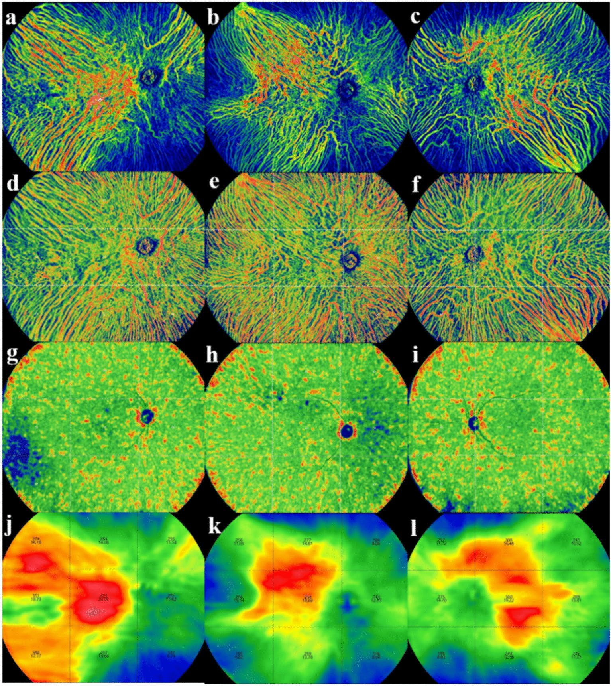
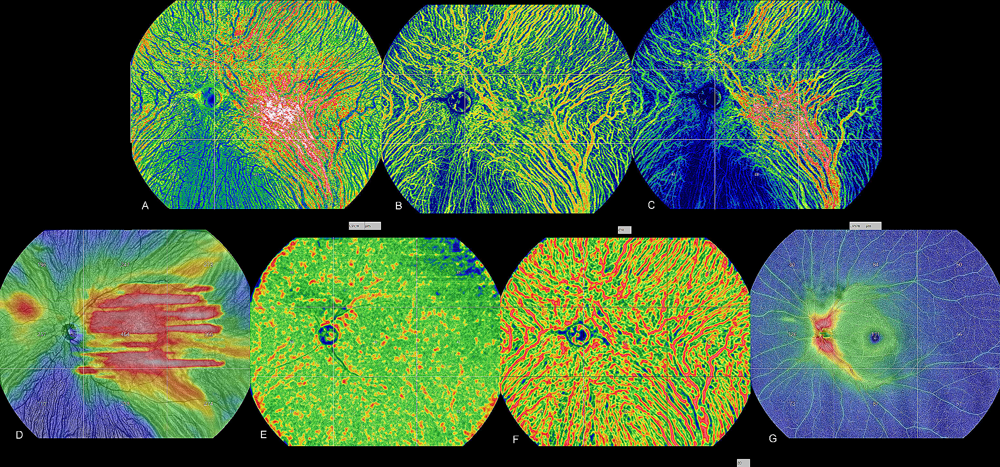
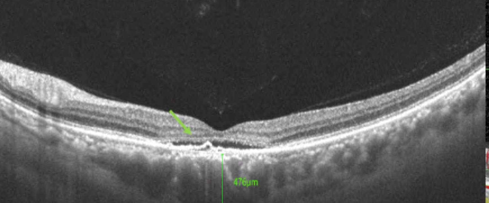
INTERNATIONAL EYE SCIENCE · 2024
2024;24(6):937–942
Read article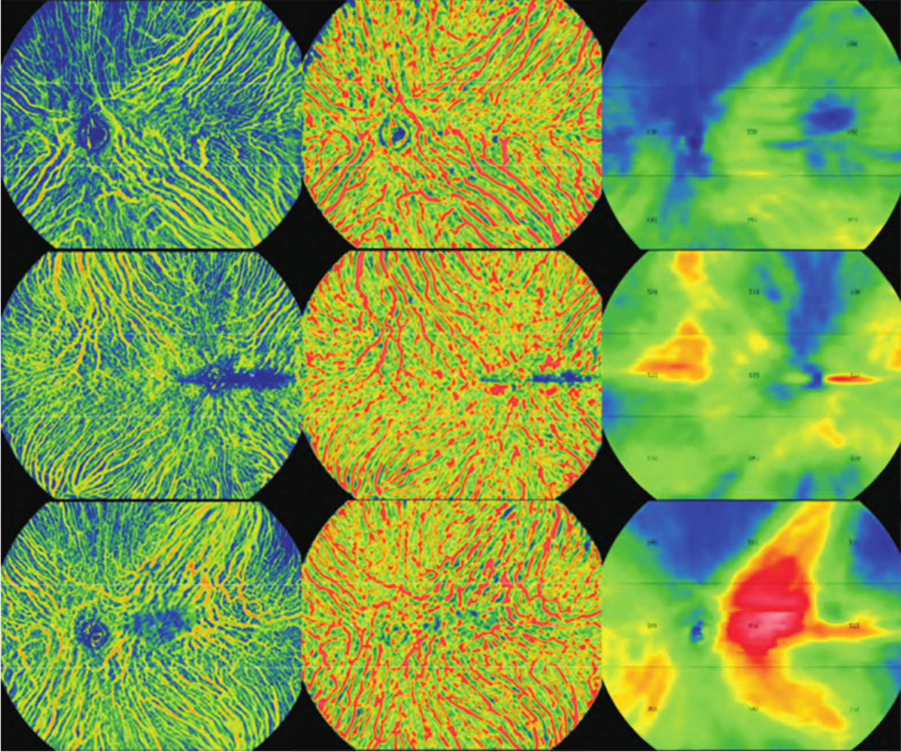
RECENT ADVANCES IN OPHTHALMOLOGY · 2024
2024;44(5):376–381
Read article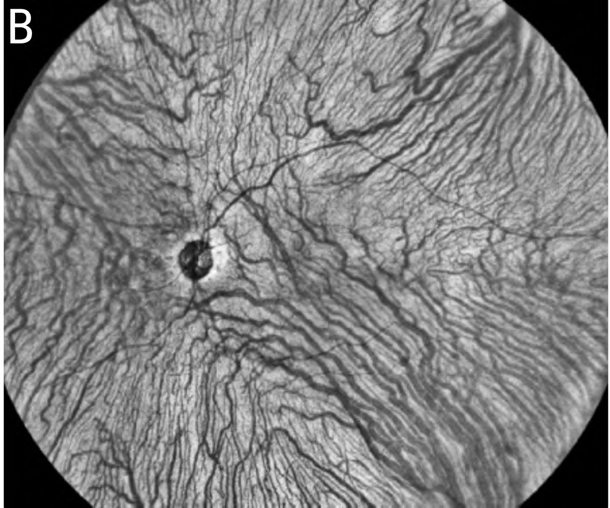
CHINESE JOURNAL OF OCULAR FUNDUS DISEASES · 2024
2024;40(4):319–323
Read article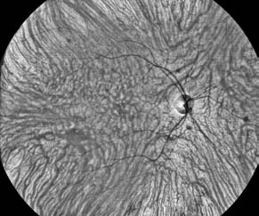
CHINESE JOURNAL OF OCULAR FUNDUS DISEASES · 2024
2024;40(5):360–365
Article record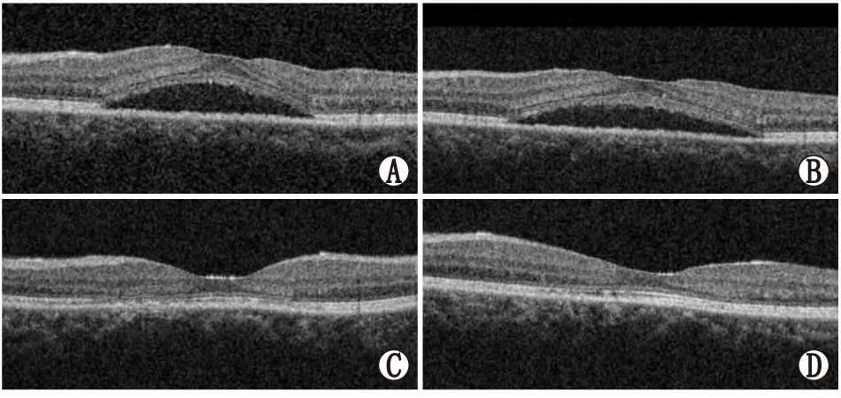
RECENT ADVANCES IN OPHTHALMOLOGY · 2024
2024;44(7):531–535
Read articleTry removing a topic, or clear the filters to see all publications.
Listed separately from published articles.
Xiao B, Lu J. · Technology and Health Care
First and corresponding author
Xiao B, Lu J, Zhang X. · Computational Biology and Chemistry
First and corresponding author
Sep 2026 – Present
Teaching and coordinating undergraduate optometry courses and practical sessions.
Nov 2025 – Jul 2026
Taught medical-related undergraduate courses and supported teaching activities.
I am seeking PhD opportunities in retinal imaging, quantitative disease phenotyping, and ophthalmic AI. I welcome conversations with research groups working at the intersection of clinical ophthalmology and computational methods.